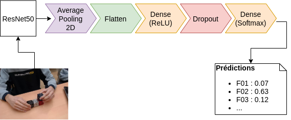
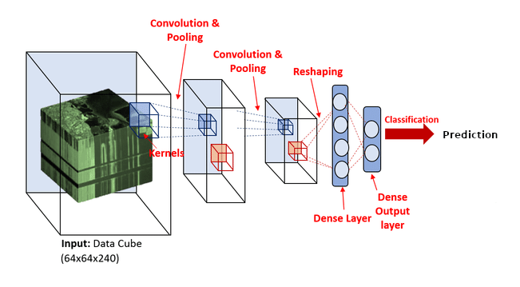

Analyse semi-automatique de vidéos de séances d'activités d'apprentissage
Projet d'initiation à la recherche
Younes Jallouf | Elie-Alban Lescout | Hugo Tardy
Plan
- Contexte
- Objectif
- Approches étudiées
- Mise en œuvre
- Constitution d'un jeu de données d'entrainement
- Perspectives et conclusion
Contexte
Contexte
- Comprendre le développement de la pensée informatique chez l'humain
- Réalisation d'activités d'informatique débranchées
- Résolution de problèmes divergents/convergents
L'activité Créacube
Apprenant·e en train de résoudre le problèmeAnalyse de l'activité Créacube par les chercheurs du LINE
- Evolution de la compréhension du problème
- Restriction de l'espace problème en vue de la résolution
- Comportement dans la résolution du problème : démarche innovante, créative, analyse des essais infructueux, ...
- Pour suivre cette évolution, il faut extraire l'information des vidéos
Interface de Codage
Annotation des vidéos
Lien entre évènement dans la vidéo et fichier JSONObjectif
Objectif
Pour l'instant, l'annotation est manuelle, fastidieuse et chronophage.
Notre objectif est donc d'automatiser l'annotation pour accélérer le processus.
Pour simplifier le problème, on restreint l'objectif à l'annotation des figures seulement.
Approches étudiées
Approche descriptive
Segmentation
(Source : http://vision.soic.indiana.edu/projects/egohands/)
(Source : http://cs-people.bu.edu/jmzhang/sos.html)
Approche directe
Utilisation d'un réseau neuronal convolutif (CNN)
Source : Albelwi, S.; Mahmood, A. A Framework for Designing the Architectures of Deep Convolutional Neural Networks. Entropy 2017, 19, 242.Mise en œuvre
Préparation des données d'entraînement
Utilisation du ResNet50 pour effectuer du Fine-tuning
structure d'un réseau résiduel(Source : https://github.com/KaimingHe/deep-residual-networks)
Fine-tuning
Prédiction d'une vidéo
Amélioration : prise en compte de la dimension temporelle dans le réseau neuronal
Utilisation de mosaïques
Utilisation d'un réseau neuronal convolutif 3D
Réseau récurrent à mémoire court et long terme (LSTM)
Premiers résultats
 Obtenu avec le jeu d'entraînement fourni par le LINE. Les classes ayant moins de 20 exemples ont été retirées. Entraînement sur 100 époques.
Obtenu avec le jeu d'entraînement fourni par le LINE. Les classes ayant moins de 20 exemples ont été retirées. Entraînement sur 100 époques.
Constitution d'un jeu de données d'entraînement
Campagne d'acquisition
Annotation
Passage d'évènements ponctuels à des intervalles. Réflexion engendrée au LINE. Interface du logiciel d'édition de sous-titres Aegisub
{ ...
"6": {
"start": "123.755",
"end": "125.013",
"label": "F07"
},
"7": {
"start": "128.926",
"end": "129.988",
"label": "F01"
},
...
}
Seconds résultats : entraînement sur 400 époques avec 9000 images issues du nouveau jeu d'entraînement.
Perspectives et Conclusions
- Réétudier la possibilité de la convolution 3D sur GPU.
- Confronter le CNN et le LSTM.
- Développement d'un interface ergonomique pour permettre à un opérateur humain de valider rapidement les prédictions de notre classifieur.
Remerciements
A Thierry Viéville et Margarida Romero, pour leur accueil au LINE notamment.
Aux élèves de l'ENSG pour leur participation.
A Serge Botton pour le prêt de sa webcam.